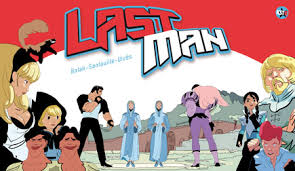

Résumé

Le jeune Adrian Velba est heureux. Après avoir travaillé dur toute l'année dans l'école de combat de Maître Jansen, il va enfin pouvoir participer, pour la première fois de sa vie, au grand tournoi annuel parrainé par le roi Virgil et la reine Efira. Même son partenaire - le chétif Vlad, un piètre combattant - ne parvient pas à limiter son enthousiasme.
Hélas, à quelques heures de la clôture des candidatures, Vlad déclare forfait, malade. Le coup est terrible pour Adrian, car il faut être deux pour s'inscrire au tournoi. Echec sans appel ?Non, car in extremis surgit un grand gaillard que personne n'a jamais vu en ville, Richard Aldana...